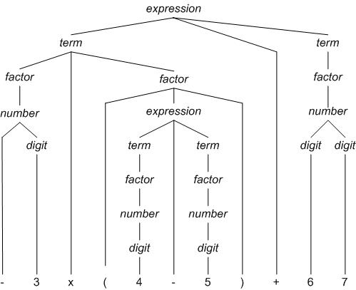

Computer Engineering
II
Machine Problem 3
| Schedule | Lab schedule |
| Homework | Lab Manual |
| Machine Problems | Resources |
| Final Project | Photos |
| Gradebook | Feedback |
| Syllabus | Archives |
| Lectures | Download NASM |
| Home | Restricted access |
|
|
| ||||||||||||||||
Machine Problem 3:
|
| Assigned | Tuesday, 28 September 2004 |
| Due Date | Wednesday, 13 October 2004 |
| Purpose | To understand recursion. |
| Points | 60 |
To iterate is human; to recurse, divine. -- L. Peter Deutsch
Program MP3 will input an arithmetic expression from the keyboard and output the value of the expression.
Files for MP3 are on the V: drive in the directory
V:\ece390\mp3. In this directory are the program framework
mp3.asm and a running version of the program mp3lab.exe.
Lab versions of subroutines are in libmp3.lib, which contains all
subroutines of LIB291 plus libMain, libGetExp, libExpr, libTerm, and libFactor.
You will use mp3xit instead of dosxit. Some test data are in the file test3.in.
You should start by copying these
files to your home directory with the following command:
xcopy /s
V:\ece390\mp3 W:\mp3
You may download the files from the server as
mp3.zip
The program prompts the user for an arithmetic expression comprising only digits, parentheses, and operators '+' (addition), '-' (subtraction), 'x' (multiplication), and '/' (quotient of division). When the user presses the Enter key, the program calculates the value of the expression, with multiplication and division taking precedence over addition and subtraction. Expressions with operators of equal precedence are evaluated from left to right. The program types 'Syntax error' if the expression is syntactically incorrect. The program types 'Overflow' if overflow occurs, including a multiplication whose product does not fit in one word. After responding, the program prompts the user for another expression. If the user presses the Enter key without typing an expression, then the program exits to DOS. Sample dialogue:
Expression: 6+7x-8 (Negative numbers can appear)
-50 (Multiplication takes precedence over addition)
Expression: (6+7)x-8 (Parentheses can appear)
-104
Expression: 4-6+7
5 (Left to right evaluation; not 4-(6+7)
Expression: (342*987+(
Overflow (Program found overflow before syntax error)
Expression: 21/3()
Syntax error
The program can be run by typing mp3 at the command prompt. If you wish to use the test data files as input, type mp3 < test3.in | more at the prompt. To output to a file test3.mp and compare the outputs type mp3 < test3.in > test3.mp and then fc test3.mp test3.out
The organization of MP3 follows the syntax of arithmetic expressions, specified in Backus-Naur form below:
expression ::= term [ + term | - term ]*
term ::= factor [ x factor | / factor ]*
factor ::= number | ( expression )
number ::= [ - ] digit [ digit ]*
digit ::= 0 | 1 | 2 | 3 | 4 | 5 | 6 | 7 | 8 | 9
For example, the expression -3x(4-5)+67 would be parsed as follows:
Program MP3 has a main program and subroutines GetEx, Expr, Term, and Factor. You must write the code to replace the library subroutines libMainLoop, libGetEx, libExpr, libTerm, and libFactor. You will replace these subroutines from the libmp3 library by deleting the statements that call the libmp3 subroutine and by adding your own code. Each subroutine that you write should match the output of the library subroutine exactly.
To use the library subroutines, you must declare GLOBAL the byte variable error which indicates whether an error has occurred. This variable takes on values 0 (no error), 1 (syntax error), and 2 (overflow).
For subroutines Expr, Term, and Factor, register BX always points to the next character to be processed. Below, this character is notated as M(BX).
| MainLoop |
|
| GetEx |
|
| Expr |
Store the value of the term in v WHILE error = 0 and M(BX) is '+' or '-' DO
Increment BX to point to next term Call Term to get the value w of the next term and to change BX IF error is not zero THEN Exit Expr immediately END IF IF op is + THEN v := v + w ELSE v := v - w END IF IF overflow occurred THEN error := 2 END IF Return with the value v in AX and the new BX |
| Term |
|
| Factor |
|
Demonstrate your program to an ECE 390 staff member. You will be asked to show how the stack grows to handle an expression with parentheses.
As in previous MPs, keep an MP development log and write a cover memo, which should address the following questions:
After the demonstration, submit your program and cover memo. Your program will be graded according to the clarity of your design and the quality of your documentation.
Gradesheet:
MainLoop 5 points, GetEx 6 points, Expr 12 points, Term 12 points, Factor, 15 points,
Style and documentation 6 points, Cover memo 4
points
; MP3 - Arithmetic Expressions
;
; Your name
; Date
;
; This program evaluates an arithmetic expression with parentheses.
;; Michael Loui
;; 11 September 2004
BITS 16
;====== SECTION 1: Define constants =======================================
CR EQU 0Dh
LF EQU 0Ah
BS EQU 08h
ESC EQU 1Bh ; ESC key
SPACE EQU 20h
MaxLen EQU 60 ; Maximum length of input string
; You may define additional constants here
;====== SECTION 2: Declare external procedures ============================
EXTERN kbdin, dspout, dspmsg, dosxit, ascbin, binasc
EXTERN libMainLoop, libGetEx, libExpr, libTerm, libFactor
GLOBAL GetEx, Expr, Term, Factor, error
;====== SECTION 3: Define stack segment ===================================
SEGMENT stkseg STACK ; *** STACK SEGMENT ***
RESB 256*8
stacktop:
RESB 0 ; NASM bug workaround
;====== SECTION 4: Define code segment ====================================
SEGMENT code ; *** CODE SEGMENT ***
;====== SECTION 5: Declare variables for main procedure ===================
prompt DB CR,LF,LF,'Expression: ','$'
errmsg DB CR,LF,'Syntax error','$'
oflomsg DB CR,LF,'Overflow','$'
error DB 0
;You may declare additional variables here
;====== SECTION 6: Program initialization =================================
..start:
MOV AX, CS ; Initialize Default Segment register
MOV DS, AX
MOV AX, stkseg ; Initialize Stack Segment register
MOV SS, AX
MOV SP, stacktop ; Initialize Stack Pointer register
;====== SECTION 7: Main procedure =========================================
main:
CALL MainLoop
CALL mp3xit
MainLoop:
CALL libMainLoop
RET
GetEx:
CALL libGetEx
RET
Expr:
CALL libExpr
RET
Term:
CALL libTerm
RET
Factor:
CALL libFactor
RET
| Fall 2004 |